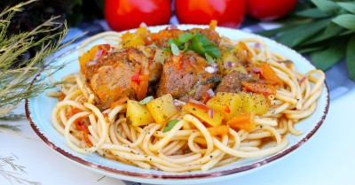

Лагман на костре в казане

Ингредиенты
- Свинина – 1500 гр.
- Макароны – 700 гр.
- Морковь – 500 гр.
- Лук – 350 гр
- Помидоры – 600 г
- Болгарский перец – 300 гр.
- Чеснок – 24 гр.
- Вода – 3500 мл.
- Растительное масло – 0.5 стак.
- Лавровый лист – 2 шт.
- Специи сухие – по вкусу
- Зелень – по вкусу
- Соль – по вкусу.
Рецепт приготовления
- Подготовьте все необходимые продукты, которые понадобятся для приготовления лагмана в казане на костре. Самый вкусный лагман, как мне кажется, получается из мяса говядины, телятины или баранины, так же можно использовать свинину, индюшатину или мясо птицы. Я в этот раз взяла кусок свиной шеи.
- Картошку, лук, морковку и чеснок почистите. Болгарский перец разрежьте пополам, удалите семена и сердцевину. Все овощи, в том числе и помидоры ополосните в чистой воде. Картофельные клубни тщательно помойте с помощью щёточки или губки в воде, чтоб избавиться от остатков земли и грязи.
- Луковицы и перец нарежьте полукольцами, либо небольшими кубиками, как вам более привычно. Картофель в это время лучше залить холодной водой, иначе есть риск, что он потемнеет.
- Морковку нарубите брусочками, либо натрите на крупной тёрке.
- Кусок мяса ополосните в воде и обсушите бумажными салфетками. Нарежьте свинину небольшими кусочками (примерно со спичечный коробок).
- Помидоры измельчите до кубиков или долек небольшого размера.
- Разожгите костёр. Налейте в казан растительное масло и дождитесь когда оно раскалится. Поддерживайте огонь на максимуме, так как на первых этапах приготовления продукты должны обжариваться.
- Отправьте мясо в казан и, непрерывно перемешивая шумовкой, обжаривайте кусочки до появления золотистой корочки(на это уйдёт примерно 7-10 минут, зависит от того, какой силы огонь у вас под казаном).
- Далее добавьте к мясу болгарский перец и лук, обжаривайте, постоянно перемешивая продукты, около 2х минут.
- Следом идёт очередь морковки.
- Всё перемешайте и готовьте 5 минут на сильном огне, чтоб все овощи слегка зажарились.
- Отправьте в казан помидоры. Томаты лучше использовать сезонные, они более мясистые, сочные и имеют сладковатый привкус.
- Посолите содержимое казана, а так же добавьте любимые приправы. Я использовала молотые перцы, немного чили, половину чайной ложки хмели-сунели и щепотку зиры.
- Залейте продукты водой, перемешайте, после закипания сделайте огонь под казаном умеренным и готовьте под закрытой крышкой всё около 40 минут. Не забывайте подкидывать дрова, чтоб не потух огонь.
- В это время подготовьте остальные ингредиенты. Картошку нарежьте одинаковыми кубиками среднего размера( примерно 1см на 1см).
- Чеснок нарубите ножом максимально мелко, а зелень нарежьте произвольно.
- Добавьте в казан картофель.
- Следом отправьте лавровый лист и чеснок. Если у меня в наличии имеются помидоры черри, то их я обычно тоже использую для приготовления блюд на костре. По желанию можно добавить 1ст.л. томатной пасты.
- Перемешайте содержимое казана, попробуйте на соль, если требуется, то досолите. Если вам кажется, что жидкости маловато, то на этом этапе долейте необходимое количество кипятка. Оставьте под закрытой крышкой до полной готовности картофеля (примерно 20 минут).
- В это время отварите в отдельной кастрюле макаронные изделия.
- Остались последние штрихи. Добавьте зелень в казан, лавровый лист можно выловить и выбросить. Свою функцию он уже выполнил, отдав свой аромат томатному бульону.
- Снимите казан с костра и дайте блюду настояться 10-15 минут.
- Подавать лагман можно в глубоких тарелках, в виде густого супа, добавив к лапше побольше жидкости.
- Либо на плоских тарелках, как горячее второе блюдо.
Вернуться к списку блюд